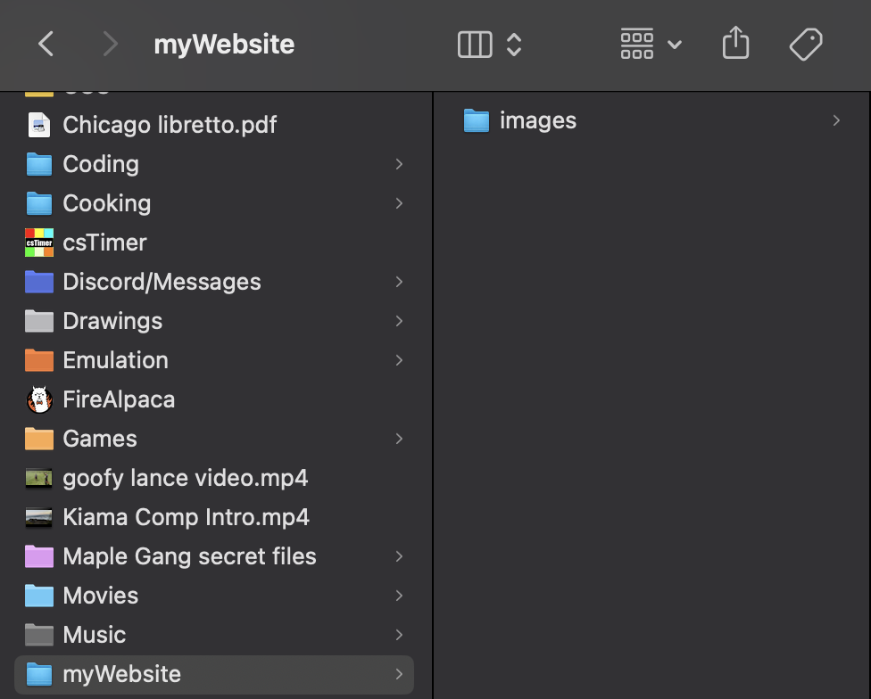

File Organisation
File organisation is key in anything in the world; making websites included. When making websites with multiple webpages, images and files, organising everything into folders not only makes your job easier but it also does not clutter up your workspace as much, when working in a program such as edstem or VSC.
Activity 1
For this activity, you will need to use your computer desktop, so get ready to switch back and forth. Follow the images and steps below to see how to organise your files.
-
Make a new folder and name it 'myWebsite'
-
Make a folder inside 'myWebsite', titled 'images'. This folder will be used to store your websites images.

-
Insert all your images into the 'images' folder.
-
Make a new folder titled, 'secondaryWebpages'. This will be for the webpages that are linked from the 'index' webpage.
-
Make a TextEdit file on your computer (or similar software if you are using a different type of computer) and type in this simple code. You can copy it from the textbox.
-
Save the TextEdit file as an HTML file named 'index.html' and add it to the 'myWebsite' folder.

-
Do the exact same thing as step 5 and step 6 but instead add it into the 'secondaryWebpages' folder.